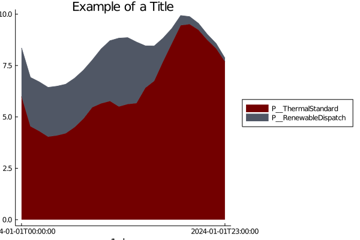
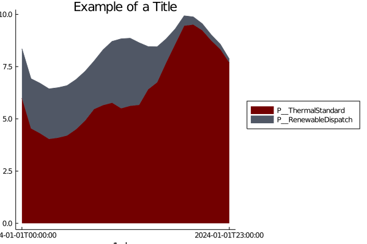

How to Make a stack plot
See How to set up plots to get started
using PowerGraphics
const PG = PowerGraphicsMake stack plots of results
stack_plot(results)

Save the stack plots to a folder
folder_path = joinpath(file_path, "plots_1")
if !isdir(folder_path)
mkdir(folder_path)
end
stack_plot(results; save = folder_path)

Show reserves in the stack plots
stack_plot(results; reserves = true)

Set different colors for the plots
colors = [:pink :green :blue :magenta :black]
stack_plot(results; seriescolor = colors)

Create a Stair Plot, instead of interpolating between values
stair_plot(results)or
stack_plot(results; stair = true)

Set a title
title = "Example of a Title"
stack_plot(results; title = title) 

For saving the plot with the PlotlyJS backend, you can set a different format for saving
stack_plot(results; save = path, format = "html")Default format for saving is png. Optional formats for saving include png, html, and svg.
This page was generated using Literate.jl.